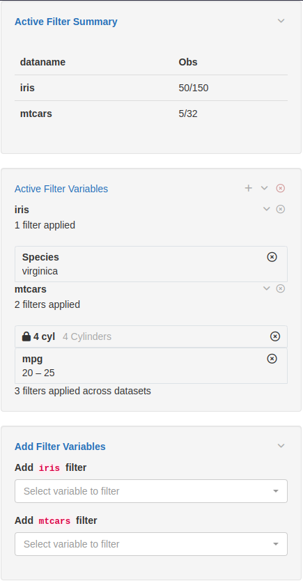

Introduction to teal.slice
NEST Core Dev Team
01/07/2022
teal-slice.RmdIntroduction
teal.slice provides a filter panel for the
teal framework. The filter panel lets application users add
simple filters to teal applications enabling them to choose
which data is to be considered for further analysis and it includes a
summary showing the number of records being kept after applying the
filters.
Information for users of the filter panel in applications
The filter panel contains three panels:
- top panel showing the number of records (observations) remaining
after the filters have been applied. For
CDISCdata, the number of unique subjects remaining in the filtered dataset is also shown. - middle panel showing the current active filters and these can be changed/removed here
- bottom panel to allow new columns of the datasets to be added as filters
Note that multiple filters for the same dataset are combined using
AND and there is no ability to apply hierarchical
filters.
An example of the filter panel in use is shown in the image below.
The iris dataset has the 50 versicolor records
removed leaving 100 observations. The mtcars dataset has
filtered out all records other than those with
(gear = 3 or gear = 5) and (disp in [205, 295]).

Depending on the data type of the selected variable, different filters are shown, for example date pickers, range sliders, checkbox inputs.
For CDISC data, filtering records in a parent dataset
(i.e. ADSL) will also apply the same filter to all child
datasets and in child datasets it is only possible to filter columns not
found in its parent’s dataset. For general relational data the filter
panel treats each dataset independently irrespective of relationships
between datasets. The filter panel also supports filtering
MultiAssayExperiment data where filters can be applied on
the subjects data level (colData(MAE)) and on each
experiment level (MAE[["experiment name"]]).
Information for R developers using the filter panel
The example app below shows how to embed the filter panel inside a shiny application.
Note if you are using the teal package to create a
teal application then the FilteredData object
(datasets) does not need to be explicitly created, nor its
UI explicitly added and it is automatically available inside
teal module server functions. Additionally, we are using
shiny::dataTableOutput and
shiny::renderDataTable for this example. This can lead to
issues with Bootstrap, especially version 4. We recommend using
DT::dataTableOutput and DT::renderDataTable if
possible. See the shiny and DT documentation
for more information.
library(teal.slice)## Loading required package: shiny
library(shiny)
# create a FilteredData object
datasets <- init_filtered_data(
list(
iris = list(dataset = iris),
mtcars = list(dataset = mtcars)
)
)
app <- shinyApp(
ui = fluidPage(
fluidRow(
column(
width = 9,
tabsetPanel(
tabPanel(title = "iris", dataTableOutput("iris_table")),
tabPanel(title = "mtcars", dataTableOutput("mtcars_table"))
)
),
# ui for the filter panel
column(width = 3, datasets$ui_filter_panel("filter_panel"))
)
),
server = function(input, output, session) {
# this is the shiny server function for the filter panel and the datasets
# object can now be used inside the application
datasets$srv_filter_panel("filter_panel")
# get the filtered datasets and put them inside reactives for analysis
iris_filtered_data <- reactive(datasets$get_data(dataname = "iris", filtered = TRUE))
mtcars_filtered_data <- reactive(datasets$get_data(dataname = "mtcars", filtered = TRUE))
output$iris_table <- renderDataTable(iris_filtered_data())
output$mtcars_table <- renderDataTable(mtcars_filtered_data())
}
)
if (interactive()) {
runApp(app)
}The FilteredData object (datasets above)
provides additional methods (such as
datasets$get_call(<dataname>) to get the code used to
filter the data) and is also possible to programmatically set the state
of the filter panel using the set_filter_state function for
example:
shiny::isolate(
set_filter_state(
datasets,
list(iris = list(Species = list(selected = c("setosa", "versicolor"))))
)
)For details about these and other advanced functionality see the function documentation and the example application toward the end of the “Filter panel for NEST developers” vignette.